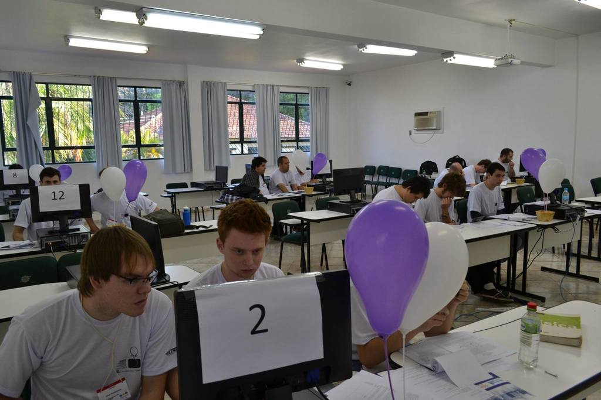

O que é a Maratona de Programação?
A Maratona de Programação é um evento da Sociedade Brasileira de Computação que existe desde o ano de 1996. Nela um time com 3 alunos deve resolver diversos problemas computacionais durante 5 horas de competição. Ganha quem resolver mais problemas em menos tempo. Mais informações no site oficial.

Maratona de Programação 2014 - Etapa regional - Três de Maio.
Por que devo participar?
Existem vários motivos para participar da Maratona, e de outras competições de programação similares:
Porque é divertido.
Se você é aluno da ES ou da CC, é razoável supor que você goste de programar. A Maratona é uma maneira bastante divertida de desenvolver e testar seus conhecimentos na área.Porque você aprende coisas úteis.
Ao treinar para a Maratona, você vai desenvolver uma série de habilidades que são extremente úteis não apenas para o seu curso de graduação, mas também para a sua vida profissional.Participando da competição, você vai ganhar um bom conhecimento sobre algoritmos, que vai te ajudar bastante ao longo do curso e da sua futura vida profissional. Projeto e Análise de Algoritmos, que em geral é o pesadelo de todos os alunos da CC, acaba se tornando uma das disciplinas mais fáceis do curso para quem treina para competições. Mas conhecimento avançado de algoritmos te ajuda em muito mais coisa do que só PAA. Tudo em computação envolve, de uma forma ou de outra, algoritmos.
Tão importante quanto isso (talvez até mais importante) é o fato de que essas competições desenvolvem a habilidade de modelar e resolver problemas computacionais complexos, partindo do zero. Essa é uma habilidade que é será muito importante pelo resto da sua vida, e que talvez não seja tão enfatizada durante o curso de graduação. Em geral, ao fazer provas e trabalhos práticos de disciplinas do curso, ou é extremamente óbvio qual técnica deve ser usada para resolver um problema, ou então é fácil inferir pelo contexto: se o que você estudou desde a última prova foram algoritmos em grafos, então os problemas da próxima prova muito provavelmente são resolvidos com algum desses algoritmos. Na vida real, porém, as coisas não funcionam assim. Não importa se você vá para a indústria ou siga carreira acadêmica, você vai ter problemas, sem nenhum contexto, que você vai precisar modelar como problemas computacionais e resolver.
Resumindo: na vida real, ninguém vai te pedir explicitamente para resolver, digamos, o problema da mochila. Mas você vai encontrar problemas que podem ser modelados como o problema da mochila. Reconhecer isso para modelar e resolver problemas de forma eficiente é uma habilidade importante, que a maratona vai te ajudar a desenvolver.
Porque é um diferencial importante para o mercado de trabalho.
Sabe a tal habilidade de modelar problemas complexos que citamos acima? Bem, ela é algo bastante útil, mas também é bastante rara. E várias empresas trabalham em problemas reais extremamente complexos, para os quais ainda não se conhece solução. Para essas empresas, pessoas com essa habilidade valem ouro.Diversas empresas, de todos os tamanhos, têm cada vez mais procurado ex-maratonistas. Há *muitos* maratonistas trabalhando em empresas como Google, Facebook, IBM e outras, em problemas que afetam centenas de milhões de pessoas todos os dias. Se você tem algum interesse em trabalhar nesse tipo de problemas, a maratona pode ser o diferencial que você precisa.
Mas e se você quer seguir carreira acadêmica? Bem, bons pesquisadores também trabalham em problemas complexos sem solução simples conhecida. De novo, as habilidades que a maratona desenvolvem são extremamente úteis.
Resumindo: a maratona pode ser a diferença entre passar o resto da vida escrevendo programas para controlar estoque de padaria e passar o resto da vida trabalhando em alguns dos maiores problemas da humanidade. O que você prefere?
Não que haja nada de errado em escrever programas de controle de estoque de padaria. Mas, honestamente, não é lá muito interessante.
Mas eu ganho alguma coisa participando da Maratona?
Tudo o que está descrito acima ainda não te convenceu? Bem, existem algumas outras vantagens colaterais da Maratona, então:
Viagens
A maratona é uma competição em várias fases. A maior parte delas ocorrem fora de Alegrete. Em 2014, por exemplo, times da UNIPAMPA viajaram para Três de Maio.Prêmios
Algumas competições oferecem prêmios diversos. O mais comum são pequenos brindes, como camisetas, canecas, rádios, celulares, video-games, etc. Mas há também prêmios mais substanciais.Atitidade Complementar de Graduação (ACG)
É creditado horas de ACG para quem participar dos treinamentos do grupo de estudos.
Etapa regional - Três de Maio.
Etapa regional - Três de Maio.
O que eu preciso saber para começar?
Temos um grupo de treinamento para competições de programação que realiza treinos semanais. Qualquer pessoa é muito bem-vinda nesses treinos, onde há várias pessoas que podem te ajudar a começar a resolver problemas.
Além disso, você pode começar por conta própria a resolver problemas do URI. Qualquer dificuldade ou dúvida que você tenha sobre algum problema ou algum assunto, nos contate e iremos colocá-la na próximo treino.
Como eu faço para participar?
Foi feito uma postagem no grupo da computação e da engenharia de software no Facebook, se você comentar lá, algúem com certeza irá lhe ajudar. Ou você pode também entrar em contato conosco pela página de contato.
Os treinos são semanais e você pode aparecer por lá quando quiser. Os demais integrantes do grupo irão lhe ajudar a resolver problemas para seu nível —– por exemplo, se você nunca participou de competições antes, os problemas que você deve tentar resolver num treino são bem diferentes do que os problemas que alguém que está treinando há 2 anos deve tentar resolver.
Texto copiado adaptado de: http://www.maratona.dcc.ufmg.br